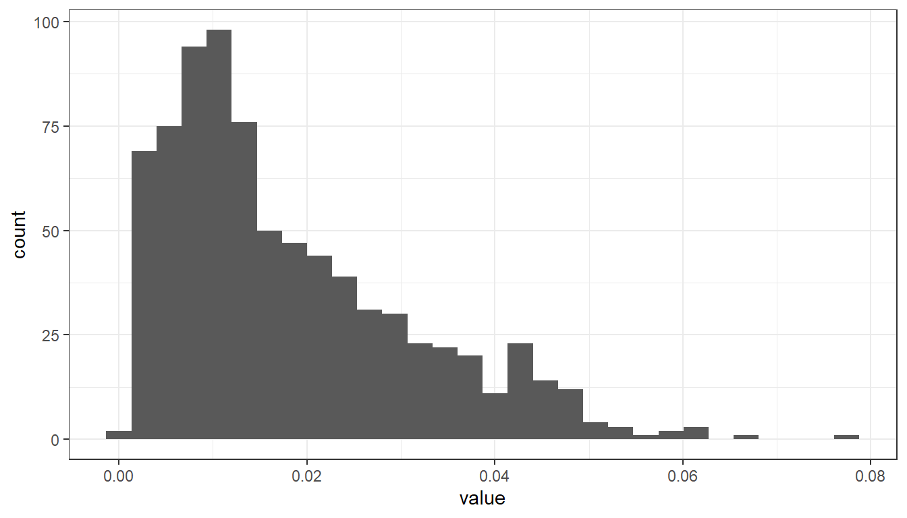

Lesson 8 Data visualisation
R has a very rich set of graphical functions. The R Graph Gallery provides a large number of examples (including code).
ggplot2 library, which is the most popular library for creating graphics in R. You will learn to create standard graphs such as histograms, boxplots or scatterplots. Furthermore, map making in R will be introduced.
8.1 The Grammar of Graphics
The ggplot2 library is part of Tidyverse and offers a series of functions for creating graphics declaratively, based on the concepts outlined in the Grammar of Graphics by Leland Wilkinson.
The grammar of graphics is a schema that enables us to concisely describe the components of a graphic. These components are called layers of grammatical elements. Overall the grammar comprises seven layers:
- Data - The data element is the dataset itself.
- Aesthetics - This layer defines how variables are mapped onto scales (see description below).
- Geometries - This element determines how our data is being displayed (bars, points, lines)
- Facets - Facetting splits the data into subset and displays the same graph for every subset.
- Statistics - These are statistics derived from the data (add mean, median, quartile, etc.).
- Coordinates - This element determines the transformation of axes (e.g. change spacing of displayed data)
- Themes - This element determines the graphics background.
The aestethics layer offers a number of different options to map data onto visual variables. A visual variable is an aspect of a mark that can be controlled to change its appearance.
Visual variables are:
- Size
- Shape
- Orientation
- Colour (hue)
- Colour value (brightness)
- Texture
- Position (map variable to x or y axis)
For instance, in Figure 8.1 variables ‘Gdp per capita’ and ‘Life Expectancy’ are mapped onto the x and y axes (visual variable position), variables ‘national population’ and ‘world regions’ are mapped onto visual variables size and color.

Figure 8.1: Visual variables color and size
In order to make that concepts clearer, a number of examples will me presented in upcoming sections.
8.2 Visualization of distributions
As already announced above, functions in the ggplot2 library are structured according to the Grammar of Graphics. To create a graph in ggplot2, we need to provide input data, specify visual variables by means of an aesthetics element (aes()), specify the geometry of marks (e.g., geom_point) and apply transformations (axis spacing) and themes (background theme of the graph).
We start the analysis with a simple histogram, to explore the distribution of air quality data that has been measured at different locations in Upper Austria.
The data includes the following variables
The following code renders the first five lines of the dataset in a knitr table:
library(tidyverse)
library(knitr)
#read csv data, Note: Semicolon seperated CSVs can be loaded by function 'read_delim()'
airquality <- read_delim("data/AirQualityUpperAut.csv", delim = ";")
airquality %>%
dplyr::slice_head(n = 5) %>%
knitr::kable()| time | station | component | meantype | unit | value |
|---|---|---|---|---|---|
| 21.10.2021 13:30 | C001 | BOE | HMW | m/s | 14.1 |
| 21.10.2021 14:00 | C001 | BOE | HMW | m/s | 12.0 |
| 21.10.2021 14:30 | C001 | BOE | HMW | m/s | 10.1 |
| 21.10.2021 15:00 | C001 | BOE | HMW | m/s | 7.9 |
| 21.10.2021 15:30 | C001 | BOE | HMW | m/s | 9.2 |
The code below filters the airquality datset by measurement component and temporal resolution. Then the data subset is passed as a first argument to function ggplot(). In the second argument, we map the variable ‘value’ onto the x-axis with the aesthetics argument aes(). geom_histogram() specifies the geometry of the plot and theme_bw() is used to add a background theme.
#filter NO2 measurements with temporal resolution 30min (HMW)
airquality %>%
dplyr::filter(component == "NO2" & meantype == "HMW") %>%
#create plot
ggplot2::ggplot(., #the dot '.' represents the piped value
aes(
x = value #map variable 'value' onto x-axis
)
) +
ggplot2::geom_histogram() + #define geometry
ggplot2::theme_bw() #define theme
If we aim to distinguish between measurements of respective measurement stations, we can map the variable ‘station’ onto visual variable color:
airquality %>%
dplyr::filter(component == "NO2" & meantype == "HMW") %>%
dplyr::filter(station == "S125" | station == "S431" | station == "S270") %>% #select 3 stations
ggplot2::ggplot(.,
aes(
x = value,
fill = station
)
) +
ggplot2::xlab("NO2 [mg/m^3]") +
ggplot2::ylab("Count") +
scale_fill_manual(name = "Measurement stations", values = c("grey20", "grey50", "grey80")) +
ggplot2::geom_histogram() +
ggplot2::theme_bw() 
This is implemented by adding an attribute fill = station to the aesthetics element (aes()). ggplot2 offers a number of functions to specify your own set of mappings from levels in the data to aesthetic values. In the example above the function scale_fill_manual() is used to map the three levels S125, S270 and S431 to the predefined ggplot colors grey20, grey50 and grey80. Instead of ggplot colors, you can also use hex color codes.
Note that plot components are added by means of a plus ‘+’ sign. It allows you to start simple, then get more and more complex.
So far we have added two axis labels. Create a new R-Script, download the input data, recreate the histogram and insert one additional line of code to add a plot title (see documentation).
See solution!
Insert title:
ggplot2::ggtitle(“Nitrogen dioxide concentration”)
8.3 Boxplots
The same basic syntax is used to create other types of plots like bar plots (use geometry geom_bar() or geom_col()), line plots (use geometry geom_line()) and many others.
For instance, if we replace geom_histogram() by geom_boxplot(), the value distribution of NO2 measurements is visualized by means of a box plot:
#filter NO2 measurements with temporal resolution 30min (HMW)
airquality %>%
dplyr::filter(component == "NO2" & meantype == "HMW") %>%
#create plot
ggplot2::ggplot(., #the dot '.' represents the piped value
aes(
x = value #map variable 'value' onto x-axis
)
) +
ggplot2::xlab("NO2 [mg/m^3]") +
ggplot2::geom_boxplot() + #define geometry
ggplot2::theme(
axis.text.y = element_blank(), #remove text and ticks from y axis
axis.ticks.y = element_blank()
)
Note that the last two lines remove text and tick marks from the y-axis of the plot.
Just as historamms, box plots are used to inspect distributions in data. The interpretation, however, does require some additional information.
The lower and upper edge of the box (the so called lower and upper hinges) correspond to the first and third quartiles. The vertical line that seperates the box, indicates the median value (second quartile).
The upper whisker extends from the hinge to the largest value no further than 1.5 * IQR from the hinge (where IQR is the inter-quartile range, or distance between the first and third quartiles). The lower whisker extends from the hinge to the smallest value at most 1.5 * IQR of the hinge. Data beyond the end of the whiskers are called “outlying” points and are plotted individually.
In our histogram examples, we have mapped the variable ‘station’ onto visual variable color to seperately visualize measurements of different stations. Try to apply the same approach to render mesurements of stations S125, S270 and S431 seperately in a box plot.
See my solution!8.4 Scatterplots
While boxplots and histograms reveal distributions in data, scatterplots are used to illustrate relationships between variables.
In the following example, air temperature (TEMP) and relative humidity (RF) measured in a 30min interval by station ‘S108‘ are filtered from data table ‘airquality‘. Then the two tables are joined by their common field ‘time‘. The joined table is used as data input to render a scatterplot with temperature on the x-axis and relative humidity on the y-axis.
#half-hourly temperature measurement of station S108 to data frame
temp_tab <- airquality %>%
dplyr::filter(component == "TEMP" & meantype == "HMW" & station == "S108")
#half-hourly relative humidity measurement of station S108 to data frame
humidity_tab <- airquality %>%
dplyr::filter(component == "RF" & meantype == "HMW" & station == "S108")
#join humidity and temperature tables by common field 'time'
temp_tab %>%
dplyr::inner_join(
# right table
humidity_tab,
# columns to match
by = c("time" = "time")
) %>%
dplyr::select(time, value.x, value.y) %>% #select relevant columns from joined table
#create plot
ggplot2::ggplot(.,
aes(
x = value.x,
y = value.y
)
) +
ggplot2::xlab("air temperature [°C]") +
ggplot2::ylab("relative humidity [%]") +
ggplot2::geom_point(color="blue") + #define geometry scatterplot, with point color blue
ggplot2::geom_smooth(method=lm , color="red", fill="#69b3a2", se=TRUE) + #with linear trend and confidence interval
ggplot2::theme_minimal() 
The plot reveals a trend between the two variables temperature and humidity. Relative humidity tends to increase as temperature decreases and vice versa. In this video you can find an explanation for the inverse proportional relationship between relative humidity and air temperature.
Obviously, due to other predictors such as windspeed, evaporation etc., this relationship is not perfectly linear, however, it can be closely approximated by means of a linear regression line. Deviations from the linear model are indicated by a 95% confidence interval.
Copy and run the code example from above in a new R-Script. Note that the air quality data as well as the tidyverse library must be loaded to run the code in a standalone R-script file.
Go through the code example line by line and answer the following questions:
- How many measurements (records) are included in the scatterplot?
- What is value.x and value.y?
- We have used the function
geom_smooth()to fit a linear regresison model (method = lm). What is the purpose of argumentse?
See answers!
- Measurements between 21.10.2021 14:00 and 22.10.2021 12:00, half-hourly interval -> 45 records (see envoronment tab in RStudio)
- temperature and humidity values in the data frame tables
humidity_tabandtemp_tabare both denotedvalue. In order to avoid ambiguities, the join functions renames columns. - The argument defines whether confidence bounds are diplayed (
seis TRUE by default).